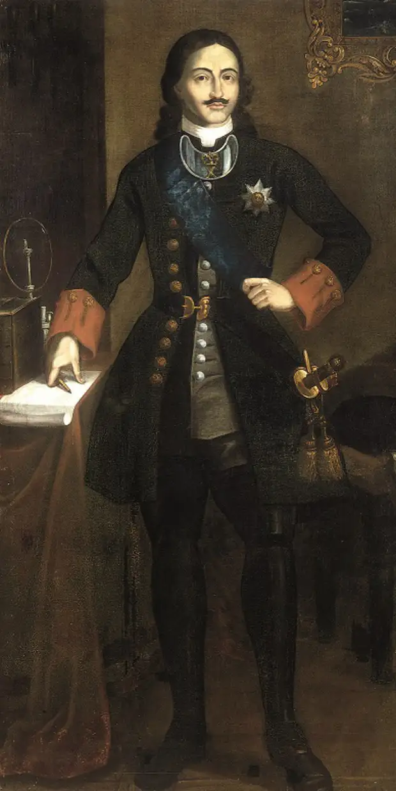
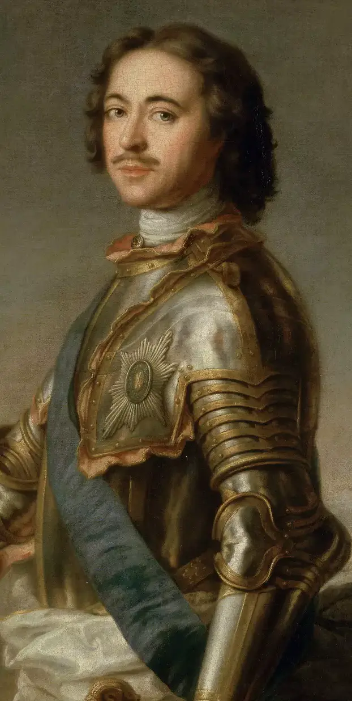

Пётр I
Прошло более шестидесяти лет с тех пор, как Российским государством начала править династия
Романовых. Непростое время тогда переживала страна: в экономическом, техническом, военном развитии
она очень отстала от европейских стран. Между царскими приближёнными — боярами и дворянами — была
постоянная вражда, а крестьяне поднимали восстания. Государство нуждалось в реформах. В 1682 году к
власти приходит сын царя Алексея Михайловича — десятилетний Пётр I.
Исследователи, политики и литераторы уже три столетия увлечены изучением жизни и деятельности Петра
I (1672–1725) - последнего царя и первого императора Российской империи. Этот великий реформатор
кардинально изменял общество, разделяя историю страны на «петровскую» и «допетровскую» эпохи, причем
некоторые из его нововведений остаются актуальными и в наше время. Все шаги Петра I в области
внутренней и внешней политики были направлены на одну цель: император стремился увеличить военную и
техническую мощь страны, прорубить «окно в Европу» и заимствовать лучшие достижения европейской
цивилизации.
На этом сайте вы сможете ознакомиться с биографией Пётра I и его наследством, узнать, что оставил
после себя император, и увидеть, как его образ повлиял на будущее.
